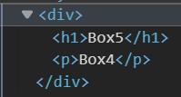
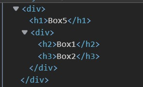
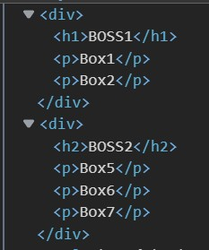

content
* 是以HTML文件中所有的元素做為對象進行操作
content
標籤選擇器是以HTML文件中找到與元素的tag相同者對象進行操作
content
這裡會討論到一個觀念是父元素與子元素
被包著的內容物稱為子元素，反之稱為父元素

此時 div 就是h1、p的父元素，反之h1、p是div的子元素
子選擇器可以選擇特定父元素內的子元素進行操作
像此範例就是選擇div標籤內的h1和p標籤進行操作
content
有沒有感覺越來越複雜，越來越好玩呢
我們先來看看這次的結構是長這個樣子

假如像剛剛那樣用子選擇器就會寫好幾層，所以就衍伸出子孫選擇器，只要是在父元素之下的所有元素都可以被選擇到，中間以空白字元隔開
content
在使用選擇器的時候要知道每個結構的樣子才不會出錯唷

現在結構越來越特殊啦~代表你越來越厲害
兄弟選擇器顧名思義就是用在兄弟的身上，那問題來了甚麼是兄弟元素呢？
被同一個父元素包著且屬於同一層的情況下才算兄弟元素
像 h1 和 p
都是屬於第一個div的子元素，然而相鄰兄弟選擇器只會影響+後面的元素，+號前面的不會被影響到哦
你一定會好奇為甚麼 p+p
會讓Box6和Box7同時為blue，因為以Box6來說Box5是他的兄弟，但以Box7來說他也是Box6的兄弟~~
content
A~B => 只要是在A之後的B標籤都會被選擇到
像h2後面的p標籤顏色都會變成blue，但h3不會被改變
content
ID屬於識別字功能，所以必須具有唯一性質
CSS就可以利用這點讓特定的標籤有不同的樣式
切記id選擇器必須使用【#】為前綴
content
class 可以讓多個標籤做使用
很常會將標籤選擇器、id選擇器、class選擇器記錯
標籤選擇器不需要前綴
id選擇器必須使用【#】為前綴
class選擇器必須使用【.】為前綴